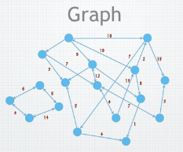
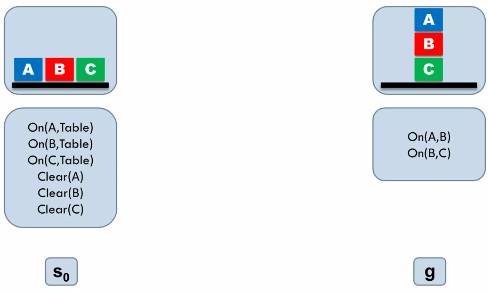
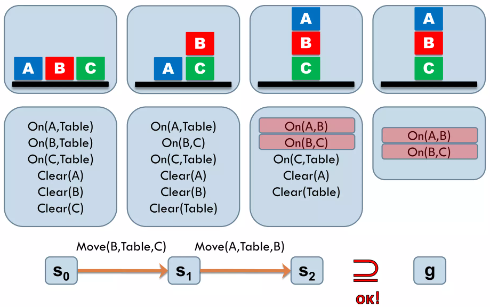
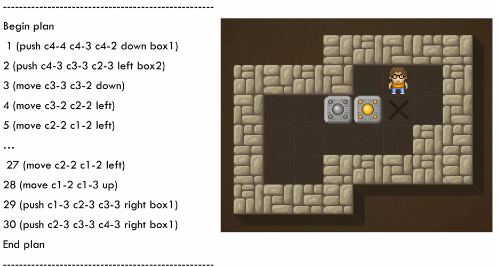
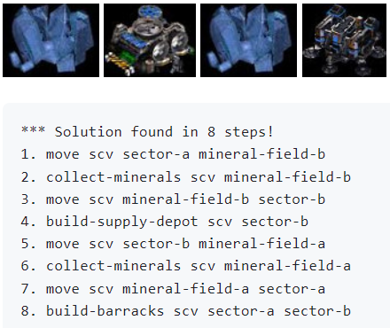
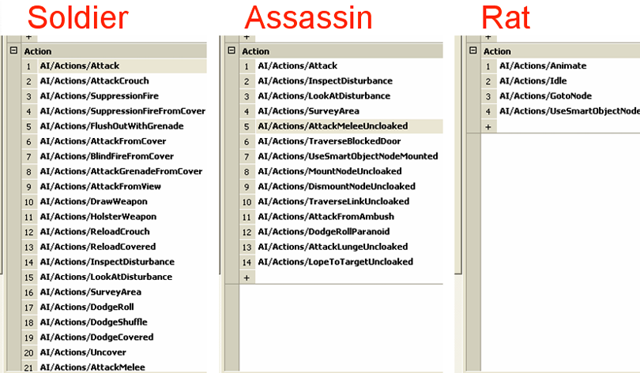

v.
Overview
- Planning: a brief revisit
- Planning: the planning problem
- Stanford Research Institute Problem Solver: the STRIPS tool
- Goal Oriented Action Planning: GOAP property, applications, vs. BT
Pathfinding (recall)
Graph (recall)
- In a tile-based game, the graph comes from the
geometry of the tiles - In a 3D environment, the graph can be built
automatically from the level geometry $\qquad\qquad\qquad\qquad\qquad\qquad$
(e.g. with a navigation mesh - Can get complex - dynamic obstacles, vaulting,
jumping, ... - Following the path can also be complex
- steering behaviours
Graph Traversal (recall)
- BFS vs. DFS
- level by level or path by path
- Stack vs. Queue
- FIFO (first in first out) or LIFO (last in first out)
- Best first search
- "best" according to some heuristic evaluation in a priority queue
Pathfinding in Graph (recall)
Applications
- Map navigation
- Maze solving
- Chip designing
- Game agent routing
Algorithms
- Greedy search
- Dijkstra's algorithm
- $A^*$ search
- String pulling
Dijkstra's Algorithm (recall)
- Save the path from the start to current node $\qquad \qquad \qquad \qquad $
- Always minimise the path for each step
- Guaranteed to find the shortest path
- Need to handle cases where a shorter path
to a node is discovered later in the search - Not the most efficient method in some cases

source: https://upload.wikimedia.org/wikipedia/commons/2/23/Dijkstras_progress_animation.gif
$A^*$ Search (recall)
- $A^*$ chooses a node that minimises the function
$f(x)$ $=$ $g(x)$ $+$ $h(x)$- $g(x)$: cost we know already
- $h(x)$: cost we guess to goal
- $A^*$ is guaranteed to find the shortest path if the
estimate $h(x)$ is admissible (underestimation) - $A^*$ is faster than Dijkstra's Algorithm as it visited 'less' nodes in the graph
- Different $h(x)$ lead to different paths (if there are multiple "shortest" paths)
- $h(x)$ $=0$ gives Dijkstra's algorithm

source: https://upload.wikimedia.org/wikipedia/commons/5/5d/Astar_progress_animation.gif
String Pulling (recall)
- Paths restricted to edges can look unnatural
- Intuition: visualise the path as a string,
then pull both ends to make it taut - Simple algorithm:
- - Found path is $p_0,p_1,\cdots,p_n$
- If the line from $p_i$ to $p_{i+2}$ is unobstructed, remove point $p_{i+1}$
- Repeat until there are no more points that can be removed - - Found path is $p_0,p_1,\cdots,p_n$
source: http://idm-lab.org/bib/abstracts/papers/socs20c.pdf
Hierarchical Pathfinding
Construct multiple navigation mesh with different abstract levels
Works well in game Factorio
https://factorio.com/blog/post/fff-317Hierarchical Pathfinding: Example
slowed down to better show how $A^*$ works
NOT slowed down
(pathfinding around lake)
(pathfinding around lake)
slowed down significantly
base pathfinder was guided by the abstract pathfinder
base pathfinder was guided by the abstract pathfinder
Planning
Planning
- An agent in an environment
- The environment has a state
- The agent can perform actionsto change the state
- Actions have a cost associated with them
- The agent wants to change the state so as to achieve a goal
- Problem: find a low-cost sequence of actions that leads to the goal
Planning as Search
- We can construct a state-action graph
- Similar to a game tree, but may include multiple paths or cycles
- Now the planning problem becomes very similar to the pathfinding problem (albeit possibly with multiple goals)
- We can use many of the same algorithms (BFS, DFS, Dijkstra)
- We can also use $A^*$ if we can come up with an admissible heuristic
Representing Planning Problem
- We can code the state-action graph Manually
- Or we can use a more general representation
STRIPS
STRIPS Planning
- Stanford Research Institute Problem Solver
- Describes the state of the environment by a set of predicates which are true
- A predicate is basically a function which returns a
bool - A predicate is basically a function which returns a
- Models a problem as:
- The initial state (a set of predicates which are
true) - The goal state (a set of predicates, specifying whether each should be
trueorfalse) - The set of actions, each specifying:
- Pre-conditions (a set of predicates which must be satisfied for this action to be possible)
- Post-conditions (specifying what predicates are made
trueorfalseby this action)
- The initial state (a set of predicates which are
STRIPS Example




source: https://www.slideshare.net/StavrosVassos/introduction-to-ai-strips-planning-and-applications-in-videogames-lecture-6-part-1
STRIPS Framework
- STRIPS gives a common framework for defining planning problems
- Definitions in terms of propositional logic
- Easy to enumerate and simulate actions, and hence search the state-action graph
- Possible to write general-purpose STRIPS solvers
GOAP
GOAP
- Goal Oriented Action Planning
- Originally developed for F.E.A.R.(2005), since used in several games
- A modified version of STRIPS specifically for real-time planning in video games
GOAP
- Each agent has a goal set
- Multiple goals with differing priority
- Goals are like in STRIPS - sets of predicates that the agent wants to satisfy
- Each agent also has a set of actions
- Like in STRIPS - actions have pre-conditions and post-conditions
- Unlike STRIPS, each action also has a cost
Action Sets
- Different types of agent could have the same goals but different action sets
- This will result in those agents achieving those goals in different ways
- -NB this doesn't have to be explicitly coded - it emerges from the GOAP system
- - E.g. this was used by the F.E.A.R. team to quickly add new enemy types
Action Sets in F.E.A.R.
source: https://www.gamedevs.org/uploads/three-states-plan-ai-of-fear.pdf
Layering
- Goal set allows different behaviours with different priorities to be layered
- Although the three AIs have the same goal sets, they will behave differently.
Implementing GOAP
- An abstracted view of the game world is used for planning
- Represented as a fixed-length array (or struct) of values
- Predicates (pre-conditions, post-conditions, goals) represented in terms of this array representation
- Most implementation also allow for programmatic pre-conditions (e.g. calling the pathfinding system to check availability of a path)
Implementing GOAP (cont.)
- Not difficult to implement
- Open-source implementations do exist
- Not built into Unity or Unreal, but asset store packages are available
Finding the Plan
- As in STRIPS, we can build a state-action graph
- Since actions have costs, we can use Dijkstra's Algorithm to find the lowest cost path to the goal
- (or $A^*$ if we can find a suitable heuristic)
- Plan is a queue of actions that the agent then executes
- If the plan is interrupted or fails then the agent can re-plan
Using GOAP
- Planning is suitable when achieving a goal requires a specific sequence of actions
- Especially when the plan is not obvious, or when you want to let the plan be emergent
- Does require abstraction in a real-time video game setting, though STRIPS-like definitions give a useful framework for this
"AAA Game AI" Compared:
GOAP vs. Behaviour Tree (BT)
- BT: designer specifies "how"
- GOAP: designer specifies "what" - "how" is in whatever system is used to implement actions (FSMs in F.E.A.R.; could use BTs or hand coding)
- Both: actions (tasks in BTs) are modular and reusable between agents
- GOAP: goals are also modular and reusable
- BT: goals are not represented explicitly
- BT can be classified as authored behaviour
- GOAP can be classified as computational intelligence
GOAP vs. Behaviour Tree (BT)
| BT | GOAP | |
|---|---|---|
| What is defined? | "how" (the tasks) |
"what" (the environment) while "how" is embedded in action implementation |
| Reusable actions? | Yes | Yes |
| Reusable goals? | Not represented explicitly | Yes |
| Classification | Authored behaviour | Computational intelligence |
Questions?